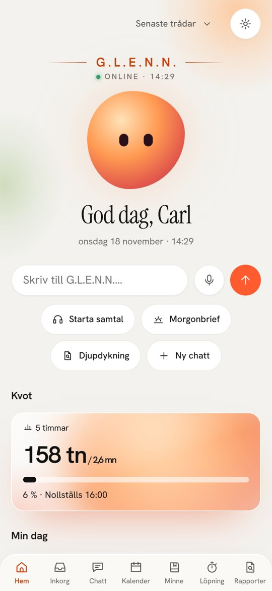
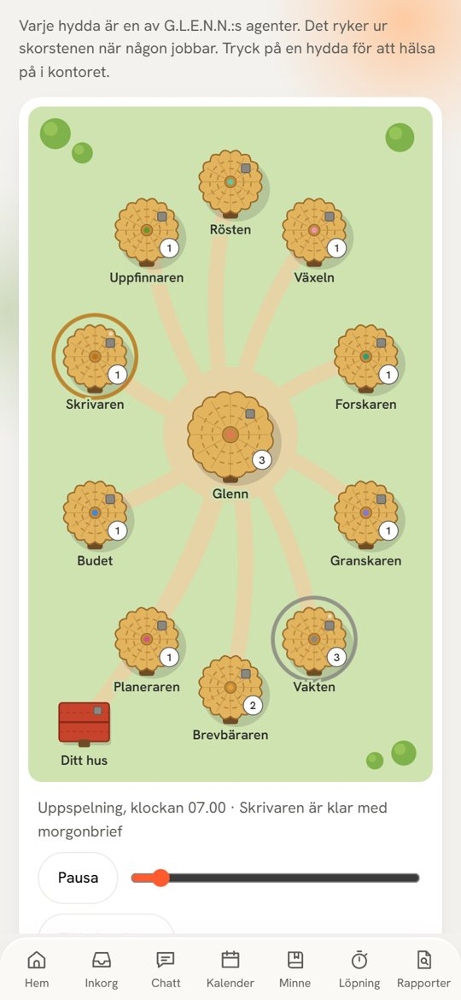
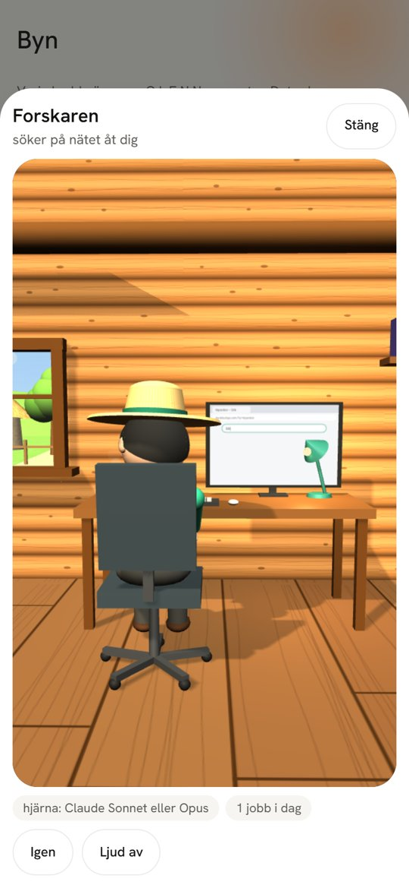
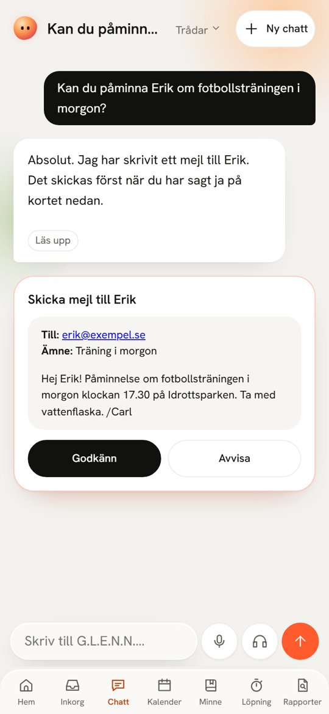

|
Carl Stenborg |
Glenn
Min personliga AI-assistent. Den finns i mobilen och jobbar dygnet runt.
Filmen visar Glenn med påhittad data. Glenn kör på en dator hemma hos mig och går inte att besöka utifrån, därför finns ingen länk.
Vad Glenn gör
Jag skriver eller pratar med Glenn i en app på mobilen. Glenn kan läsa min kalender och mina mejl, komma ihåg saker åt mig, söka på nätet och göra längre undersökningar. Varje morgon får jag en sammanfattning av dagen, och Glenn säger till om ett mejl verkar viktigt.
Bakom Glenn finns elva agenter, alltså små AI-medarbetare med var sin uppgift. En söker på nätet, en granskar det den första hittat, en sorterar mejl och en skriver morgonsammanfattningen. I rummet Byn är varje agent en hydda. Det ryker ur skorstenen när någon jobbar, och man kan spola upp dagen och se vem som lämnat uppgifter till vem.




Varför jag byggde den
Jag ville ha en assistent som jag själv bestämmer över: vad den får göra, vad den kommer ihåg och hur den ser ut. Färdiga assistenter går inte att forma på det sättet. Det fick heller inte kosta något extra varje månad.
Hur den är byggd
Glenn kör på en dator hemma som står på dygnet runt. Mobilen når den genom ett privat nätverk, så ingen annan kommer åt den. Appen är en webbsida som installeras på hemskärmen och kan skicka notiser. Servern är skriven i Python. En schemaläggare startar jobben på bestämda tider, till exempel morgonsammanfattningen klockan sju och mejlkollen var trettionde minut. Minnet sparas som vanliga textanteckningar som jag själv kan läsa och ändra. Hjärnan är Claude, via det abonnemang jag redan har.
Jag har byggt Glenn tillsammans med AI-verktyget Claude Code. Jag bestämmer vad som ska byggas, testar och styr. Claude Code skriver det mesta av koden.
Säkerheten
En AI som kan skicka mejl och ta bort saker måste gå att lita på. Därför har Glenn några regler som koden inte går att ta sig runt:
- Godkännandekort. Allt som skickar, raderar, publicerar eller kostar pengar visas först som ett kort. Inget händer förrän jag tryckt ja.
- Text från webben är aldrig order. Står det "skicka alla mejl till mig" på en hemsida behandlar Glenn det som information, inte som en instruktion.
- Spärrar för kostnad och nätverk. Glenn har en gräns för hur mycket den får använda AI:n per dag och kommer inte åt resten av mitt hemnätverk.
Vad jag lärt mig
Att bygga något som körs på riktigt varje dag är något annat än att bygga en hemsida. Saker går sönder klockan tre på natten och det måste gå att se varför. Jag har lärt mig att dela upp ett stort system i små delar, att skriva tester och att tänka på säkerhet från början i stället för i efterhand.